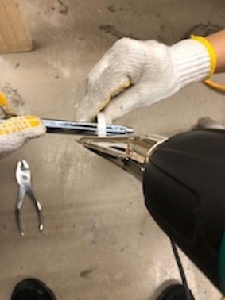
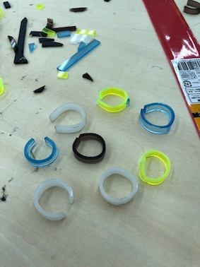
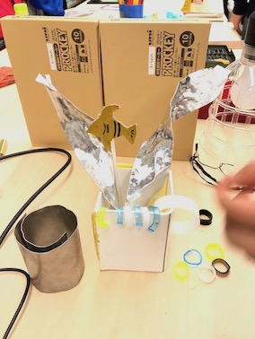

<曲げるレポート>
私がチームに貢献したのは他の人々が作業をしているときに写真を撮ってそれをアップロードするのに使用した。 写真だけ撮っているわけにはなくてアクリル版を道具を使用して曲げる時に一緒に作業をした。 先にアクリル板にホットエアガンで熱を加えて柔らかくなった時、軍手をはめた手で指輪の形にした。 (ペンチにして曲げてもいい。)
ホットエアガンで熱を加えてくれる役割もし、軍手をはめて曲げる役割もした。 アクリル版を指輪のサイズにカットしなければならないので、それをカットする時に超音波カットを使って切りた。 しかし、時間がとても時間がかかるから他の人が電気のこぎりで切った。
  
<反省点・改善点・分かったこと>
電気のこぎりで切るのが怖くてやったことがない。 私が悪かったら他の人に被害を及ぼすことを恐れて、しなかったけど自信をもってしていたらよかったんじゃないかという反省をした。 ワークショップをする時道具の名前を確実に覚えて人達に教えてくれたらよかったようだ。 ワークショップを整理しながら使っていた道具の名前を確実に知ることになった。 指輪やブレスレットを作る時の枠組みがあったら良かったようだ。 長い鉄の棒にしたが、太さが合わなかった。太さや長さを調節できる道具があったら作ることにさらに便利そうだ。